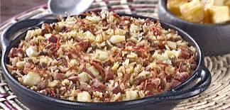

Baião de Dois

Informações da receita
Ingredientes
Modo de preparo – Arroz com Pequi
- Deixe o feijão de molho de véspera.
- No dia seguinte cozinhe-o juntamente com o caldo de carne e 2,5 litros de água fria.
- Tampe a panela e deixe cozinhar em fogo baixo por aproximadamente 1 hora.
- Em outra panela doure o paio, a cebola e o alho, no óleo.
- Junte o coentro e o arroz e refogue bem.
- Acrescente o feijão já cozido, juntamente com o caldo. Misture bem, tampe a panela e deixe cozinhar até que o arroz fique cozido, úmido e com consistência cremosa.
- Cubra o arroz com as fatias de queijo. Tampe a panela novamente e deixe que o vapor derreta o queijo.
- Sirva acompanhado de carne-de-sol frita ou assada.